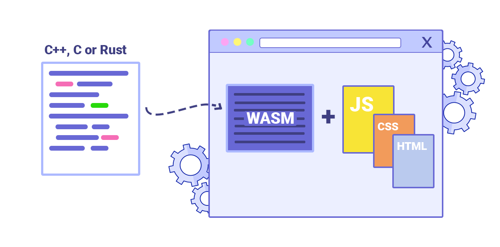

How is WebAssembly Used?

The most common way WebAssembly gets used is through a compile step where developers take code written in another language and convert it into a .wasm file. For example, a developer writing a game in C++ would use a tool called Emscripten to compile that code down to WebAssembly. The browser then downloads that .wasm file and runs it almost as fast as if it were native code on your computer. JavaScript acts as the glue that loads the module and connects it to the rest of the webpage. This workflow has made it possible to port massive codebases to the web that would have been impossible before.
The most common way WebAssembly gets used is through a compile step where developers take code written in another language and convert it into a .wasm file. For example, a developer writing a game in C++ would use a tool called Emscripten to compile that code down to WebAssembly. The browser then downloads that .wasm file and runs it almost as fast as if it were native code on your computer. JavaScript acts as the glue that loads the module and connects it to the rest of the webpage. This workflow has made it possible to port massive codebases to the web that would have been impossible before.
Outside of gaming, WebAssembly is used in a lot of professional tools that need serious performance. Figma, the popular design tool, uses WebAssembly to handle its rendering engine so that complex designs load and respond quickly in the browser. Adobe has used it to bring tools like Photoshop to the web. Even video and audio processing applications have started using WebAssembly to handle encoding and decoding tasks that previously required a desktop app. Anywhere that performance matters on the web, WebAssembly is likely involved behind the scenes.